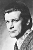

Also known as:Zombi Holocaust (original title)
Country:Italy, 89 minutes
Spoken languages:Italian, Vietnamese
Genres:Horror
Director(s):Marino Girolami
Writer(s):Romano Scandariato
Video Codec:Unknown
Number: 2866


Certification:R
Storyline:
After Malukan immigrants engage in a string of corpse mutilations at various New York City hospitals, a doctor and a morgue assistant travel to the Maluku Islands to investigate.
Cast: 

Medium: Bluray,
Loaned: No
Aspect ratio: Unknown